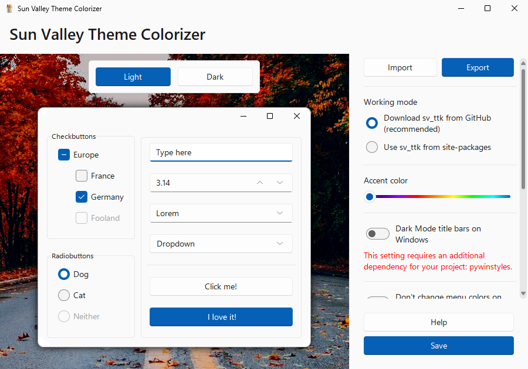
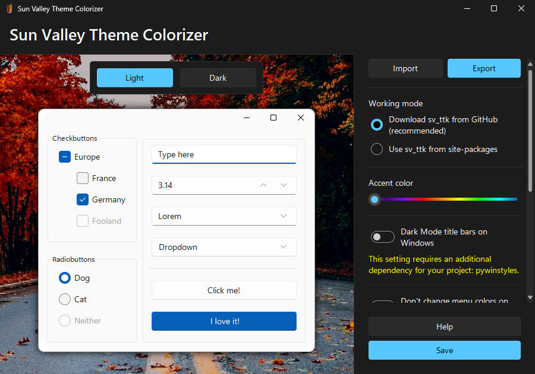
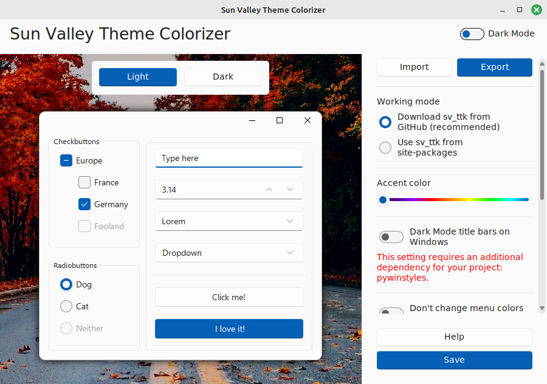
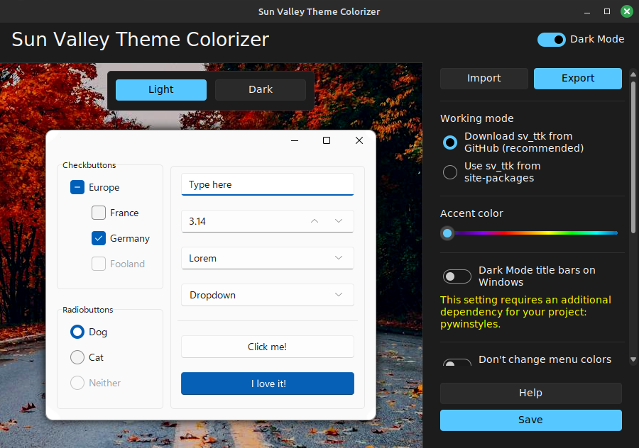
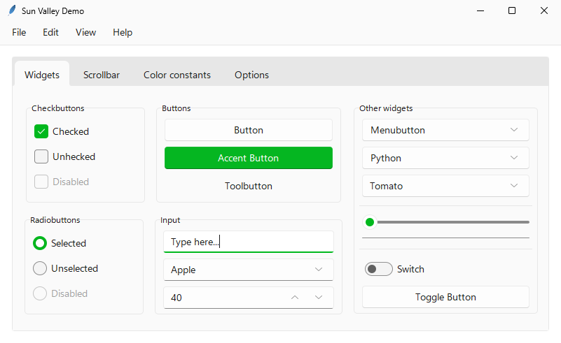
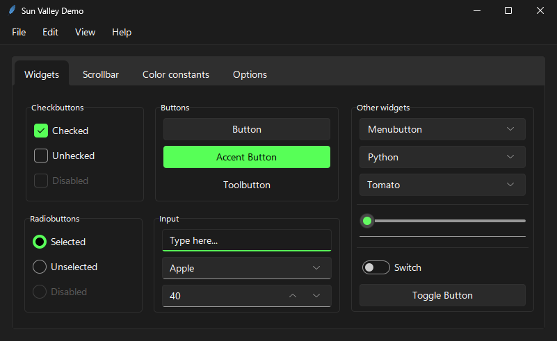
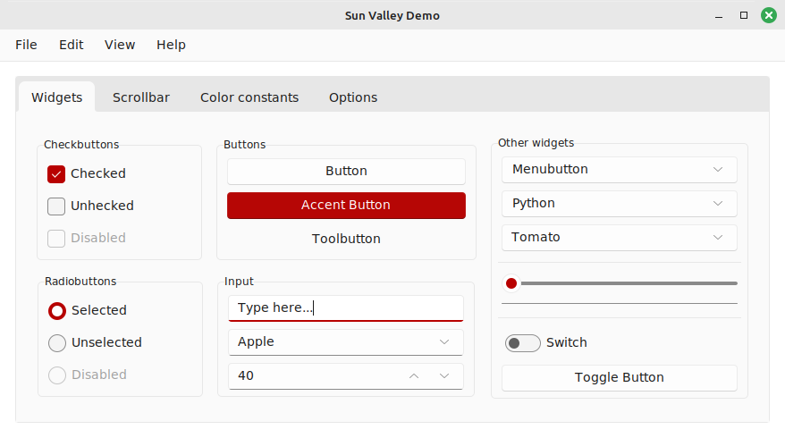
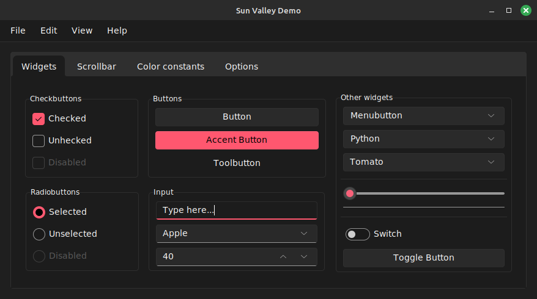

Screenshots








Features
- Change the accent color of the theme quickly and without any effort
- Apply tweaks and fixes, like dark mode title bars support and color constants for programmatic access
- Export and import tweaks for future use
- Live preview
Supported languages
- English
Get Sun Valley Theme Colorizer
Latest version: 1.3.2To be able to install Sun Valley Theme Colorizer on your computer, you must have Python 3.8 or newer installed on your computer. If you don't, you can download Python here.
If you have Python installed on your computer, run the following command to install Sun Valley Theme Colorizer:
pip install sv_ttk_colorizer
After the installation completed, you can run the tool like this:
sv_ttk_colorizer
... or even shorter:
sv_ttk_c
If all the commands above didn't work, try this one (looks like your Python installation's Scripts folder is not on your PATH):
python -m sv_ttk_colorizer
For updating the module when a new version is released, run this command:
pip install --upgrade --no-cache sv_ttk_colorizer